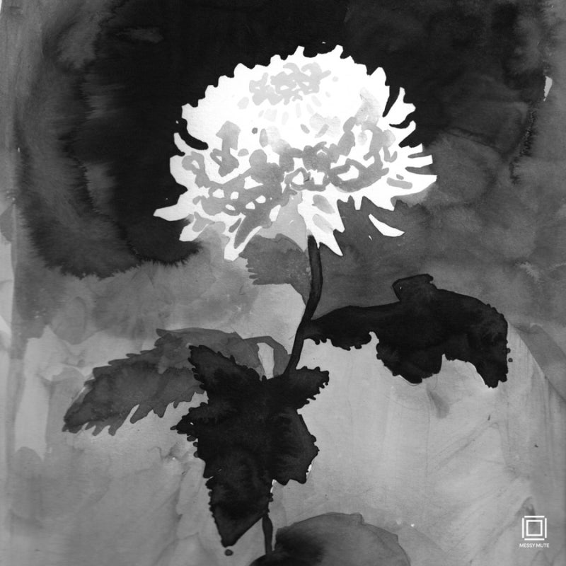

흰색국화의 꽃말은 ‘진실’입니다.자연과학적 관점에서 본 진실은 사실을 기반으로 하죠. 옳고 그름의 잣대가 있어서 모든 사람에게 같은 기준으로 적용돼요. 이 기준으로 보면 사실만을 이야기 하면 다 진실이 될 거에요. 그렇지만 자기가 ’사실‘이라고 생각한것 조차 머릿속 지도에 의해 각색된 것이라면 그 사실은 진짜 사실이 아닐 수 있지 않을까요?! 사회과학의 관점에서 보면 진실은 사실 보다는 진정성에서 시작됩니다. 진정성은 보편적 옳고 그름의 문제보다는 자신의 내면과 표출하고 있는것 사이에 어느정도의 괴리가 있는지 입니다. 내면적 스토리와 실제 실천하고있는 삶 자체도 이 스토리에 근거하고 있다면 진정성 있는 삶을 살고있는거죠! 진정성이란 어떻게 보면 나 스스로에게 진실된 태도인 것 같아요! 저는 요즘에 와서야 진실된 삶을 살고있는 기분이에요^_^*